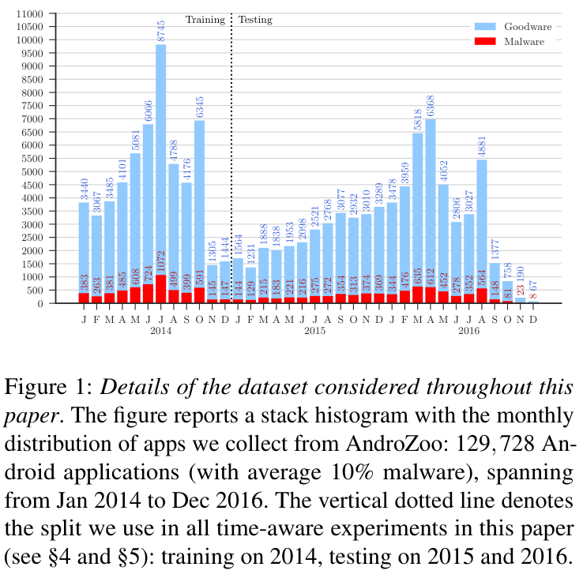
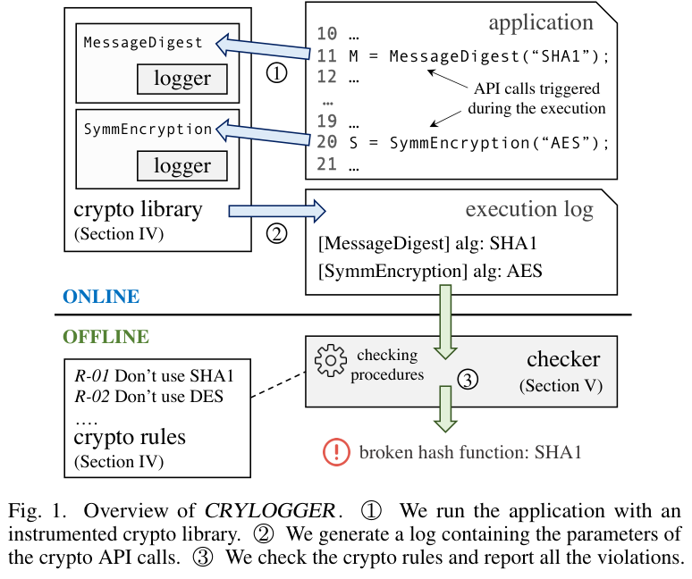
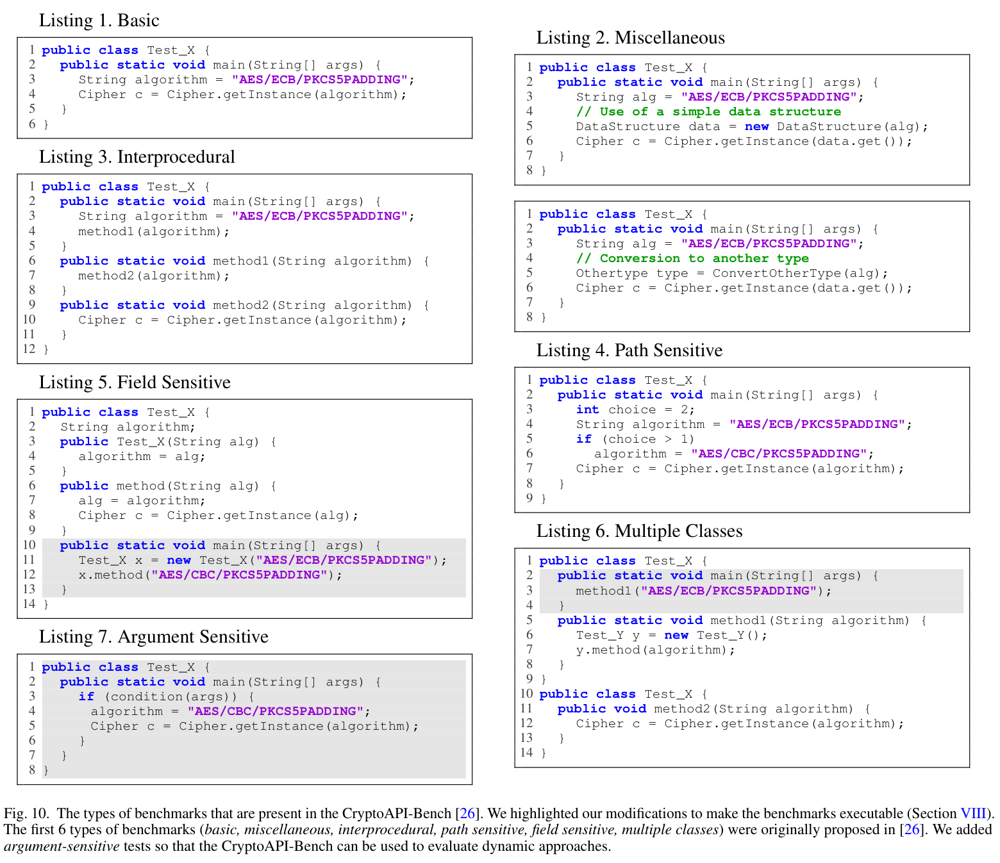
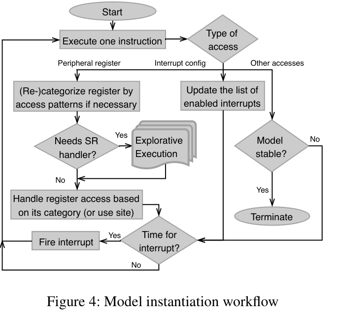
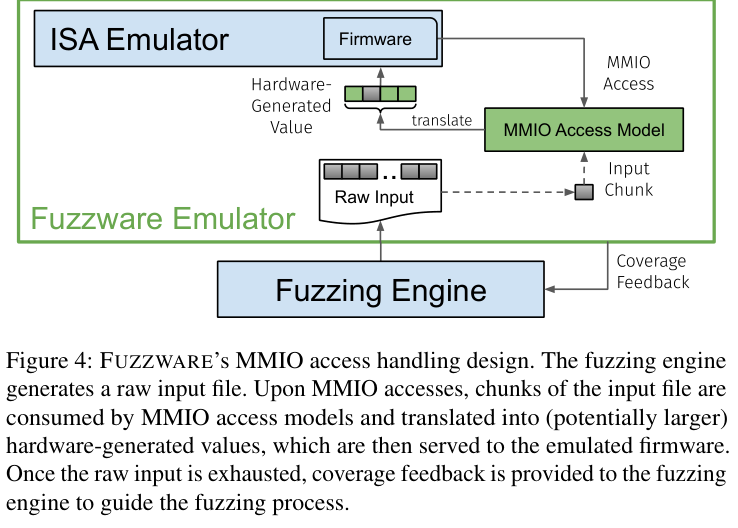
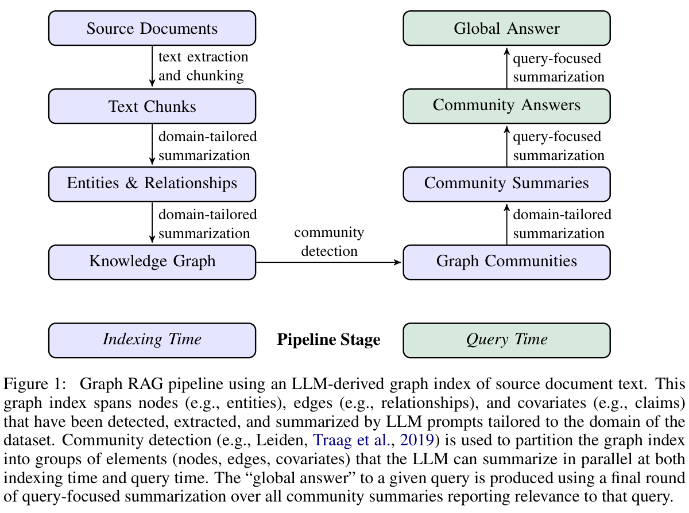

第三章实验方案 · 论文原图参考
6份论文、7张原图；S01—S07为TeX中的建议图位，R01—R07为第三方原图编号。优先考虑S01样本与配对对照、S05 GraphRAG查询对照、S06固件与双前端验证链。PDF页码包含会议封面。
这些图片用于借鉴实验组织和表达。正文仍保留图位注释，尚未插入第三方图片；第二章已有原理图在第三章按对照设计改绘。
R01 · 数据分布与训练／测试时间边界
用于 S01 / S02 · 原图 1 · PDF第4页

TESSERACT: Eliminating Experimental Bias in Malware Classification across Space and Time
Feargus Pendlebury, Fabio Pierazzi, Roberto Jordaney, Johannes Kinder, Lorenzo Cavallaro
28th USENIX Security Symposium, pp. 729–746 · 会议官方PDF，含1页会议封面
本地论文PDF · 公开来源 · 原图PNG
借鉴点：借鉴以边界和分布标记区分材料用途的表达；提示评价应交代材料组织。
适用范围：原图是Android按月样本直方图，包含原作者数据；不是家族分组四折图，不含本文RF或参考库对照。本文应另绘家族矩阵，不能移用其数量、年份或10%分布。
关键词：experimental bias / train test split / data partition
R02 · 同一程序的代码属性图
用于 S03 · 原图 4 · PDF第5页

Modeling and Discovering Vulnerabilities with Code Property Graphs
Fabian Yamaguchi, Nico Golde, Daniel Arp, Konrad Rieck
IEEE Symposium on Security and Privacy, pp. 590–604 · 作者公开稿，15页
本地论文PDF · 公开来源 · 原图PNG
借鉴点：为C0--C2对照提供多类型路径和同一代码定位的表示参考。
适用范围：原图没有本文构建配置、C0--C2或密码实验；第二章已用于机制选图，本章只借鉴对照图的局部表示，避免重复整图。
关键词：code property graph / control flow / data dependency
R03 · 运行触发、密码API日志与独立检查
用于 S03 · 原图 1 · PDF第2页

CRYLOGGER: Detecting Crypto Misuses Dynamically
Luca Piccolboni, Giuseppe Di Guglielmo, Luca P. Carloni, Simha Sethumadhavan
2020年预印本；最终发表于IEEE Symposium on Security and Privacy 2021 · 首页明确为arXiv:2007.01061v1，2020-07-02；图号按该18页预印本，不冒称会议终稿
本地论文PDF · 公开来源 · 原图PNG
借鉴点：展示执行脚本、日志采集和离线检查分开的组织方式，可用于运行观测实验的步骤。
适用范围：原方法在Android/Java密码库插桩，评价密码误用；不是Linux uprobes/eBPF、HSM或量子脆弱性识别工具，也不是本项目已实施流程。
关键词：dynamic crypto analysis / runtime logging / API parameters
R04 · 基础、跨过程、路径、字段与参数敏感的对照样例
用于 S03 · 原图 10 · PDF第17页

CRYLOGGER: Detecting Crypto Misuses Dynamically
Luca Piccolboni, Giuseppe Di Guglielmo, Luca P. Carloni, Simha Sethumadhavan
2020年预印本；最终发表于IEEE Symposium on Security and Privacy 2021 · 首页明确为arXiv:2007.01061v1，2020-07-02；图号按该18页预印本，不冒称会议终稿
本地论文PDF · 公开来源 · 原图PNG
借鉴点：与第三章包装调用、路径条件和动态参数等边界案例的构造直接相关，适合借鉴小型代码变体面板。
适用范围：原图题说明前六类来自CryptoAPI-Bench，作者增加参数敏感类型；图中为Java误用样例。本文须改写为C/C++与电力调用任务，不将其作为自有样本或已测结果。
关键词：CryptoAPI-Bench / interprocedural / path sensitive / argument sensitive
R05 · 外设模型实例化的执行与处理循环
用于 S04 · 原图 4 · PDF第9页

P2IM: Scalable and Hardware-independent Firmware Testing via Automatic Peripheral Interface Modeling
Bo Feng, Alejandro Mera, Long Lu
29th USENIX Security Symposium, pp. 1237–1254 · 会议官方PDF，19页，含1页封面
本地论文PDF · 公开来源 · 原图PNG
借鉴点：借鉴执行、寄存器处理、模型更新、中断和阻塞判定的工作流组织。
适用范围：论文针对固件测试，不包含本文F0--F3分组、电力业务或密码事件核查；原文不支持由图推断完整DMA建模。
关键词：firmware rehosting / peripheral modeling / P2IM
R06 · 仿真执行与MMIO访问模型的输入关联
用于 S04 · 原图 4 · PDF第7页

Fuzzware: Using Precise MMIO Modeling for Effective Firmware Fuzzing
Tobias Scharnowski, Nils Bars, Moritz Schloegel, Eric Gustafson, Marius Muench, Giovanni Vigna, Christopher Kruegel, Thorsten Holz, Ali Abbasi
31st USENIX Security Symposium, pp. 1239–1256 · 会议官方PDF，含1页会议封面
本地论文PDF · 公开来源 · 原图PNG
借鉴点：展示相同输入如何经访问模型进入固件，可借鉴F1/F2之间保持输入和预算一致的画法。
适用范围：原图包含覆盖引导模糊测试；本方案研究受控业务状态和密码事件，不应将fuzzer、论文覆盖成绩或精确MMIO建模直接写成本工具已有能力。
关键词：Fuzzware / MMIO access model / rehosting
R07 · GraphRAG索引与查询阶段的划分
用于 S05 · 原图 1 · PDF第4页

From Local to Global: A GraphRAG Approach to Query-Focused Summarization
Darren Edge et al.
arXiv:2404.16130 · 2024年预印本，2025-02-19修订的v2，26页
本地论文PDF · 公开来源 · 原图PNG
借鉴点：借鉴索引／查询分区与社区摘要路径，再按本文G0--G3重绘受控对照和独立评分。
适用范围：原图没有G0--G3、版本条件、图路径兼容或独立审核答案；不能直接称为本文对照设计。与may_pic复用同一原图，仅供取材，正文避免重复机制图。
关键词：GraphRAG / community summaries / retrieval ablation